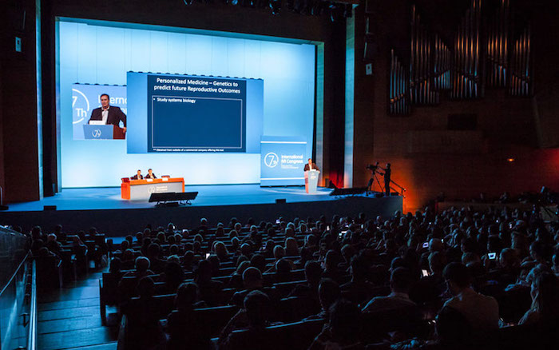
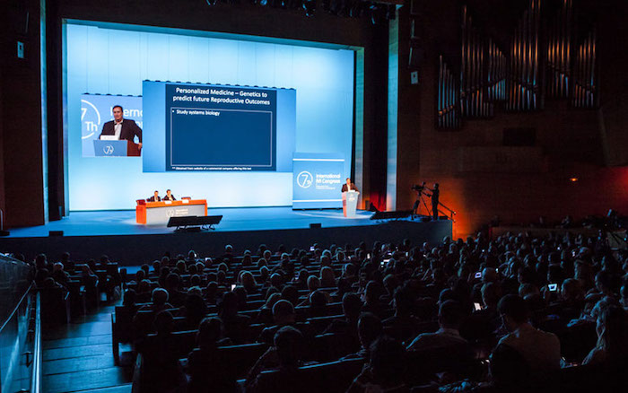

¡Hola! Soy Víctor Hugo Barros, un Médico Psiquiatra dedicado a la atención integral de la salud mental. Me gradué de Médico Psiquiatra en la UAI - Universidad Abierta Interamericana, completando mi carrera en el año 2015. Desde entonces, he estado comprometido en brindar diagnóstico médico y atención psiquiátrica de calidad a mis pacientes. A lo largo de mi carrera, he adquirido diversas habilidades y aptitudes que me han permitido ofrecer un enfoque completo en el cuidado de la salud mental. Además de mi trabajo clínico, también he incursionado en la docencia y he participado en conferencias, compartiendo mi conocimiento con otros profesionales y estudiantes interesados en el campo de la psiquiatría. Para seguir creciendo profesionalmente, realicé una Maestría en Psiconeurofarmacología en la Universidad Favaloro, la cual concluí en el año 2021. Esta especialización me ha proporcionado una comprensión más profunda de los efectos de los medicamentos en el cerebro y su relación con los trastornos mentales. Además, me he especializado en medicina legal y forense a través de una carrera de especialización en el Colegio de Médicos de la Provincia de Buenos Aires • Distrito II, completándola en el año 2020. Esta formación adicional me ha brindado conocimientos en el ámbito de la psiquiatría forense, permitiéndome abordar de manera integral los aspectos legales relacionados con la salud mental. Mi enfoque principal es proporcionar un espacio seguro y confidencial para que mis pacientes puedan recibir el diagnóstico preciso, el tratamiento adecuado y el apoyo necesario en su camino hacia la salud mental y el bienestar general. Si deseas agendar una cita, obtener más información o tienes alguna pregunta, no dudes en contactarme. Estoy aquí para brindarte el apoyo que necesitas.
Tambien he participado y contribuido con algunos congresos para mas info CLICK ACA o ir a la seccion de masinfo...
 

Tambien he participado y contribuido con algunos congresos para mas info CLICK ACA o ir a la seccion de masinfo...